This report is the final project for my accounitng analysis class, and the codes are borrowed from my professor, Dr. Hunt’s course website.
I obtained this data set from Kaggle1, and Sakshi Goyal uploaded it in 2020. This data set is about a 🏦bank’s customer churn issue. The manager💼 of the bank is interested in predicting which customer will leave this bank💸. By doing so, the bank can target those customers with special products and services to increase their satisfaction and customer retention🌞.
It contains 10,127 observations and 23 variables. Because I had some issues with Income Category values, so I add another column that used a scale of 1 through 5 to represent each income category in Excel before importing it to the Rstudio. My data analyses are based on 20 variables, which excluded the Client Number and two Naive Bayes Classifiers😶.
The purpose of this project is to predict churned customers, so I use recall as an important model fit measurement📐. I also include accuracy and kappa as measurements of model fitness. I choose kappa because customer churn is only around 16% of total customers. Although some studies state kappa is not a good measure for classification model2, I think it is good enough for this project😎 I include a comparison table📊 in the last section, Result for each models’ performance.
This data set has 9,664 missing values, which is 4.77% of the 202,540 total values. Most of those missing values are belong to categorical variables.
After using kNN to replace all the missing data by calculating their nearest 10 neighbors 🏠🏡 values, the new data set contains 0️⃣ missing values. The distribution of the target variable is not balanced⚖️, as attrited customers only represent 16% of the total customers. Because of the potential overfitting issue, I used caret’s built-in function SMOTE oversampling to overcome this issue, and it did improved the model performance. Below are some visualizations that are used for gaining some insights of the underlying data.
Transaction Count Attrited customer group has less variability and less spread regarding the total number of transactions. We can see that 50% of customer churns have less than 50 transaction counts and no of those customers have more than 100 transactions.
ggplot(data = BankChurners1,
mapping = aes(x = Attrition_Flag,
y = Total_Trans_Ct,
fill = Attrition_Flag)) +
labs(title = "Boxplot: Total Transaction Count",
tag = "Fig. 1") +
geom_boxplot(alpha = .3) +
theme(legend.position = "none") +
scale_fill_brewer(palette = "Dark2")
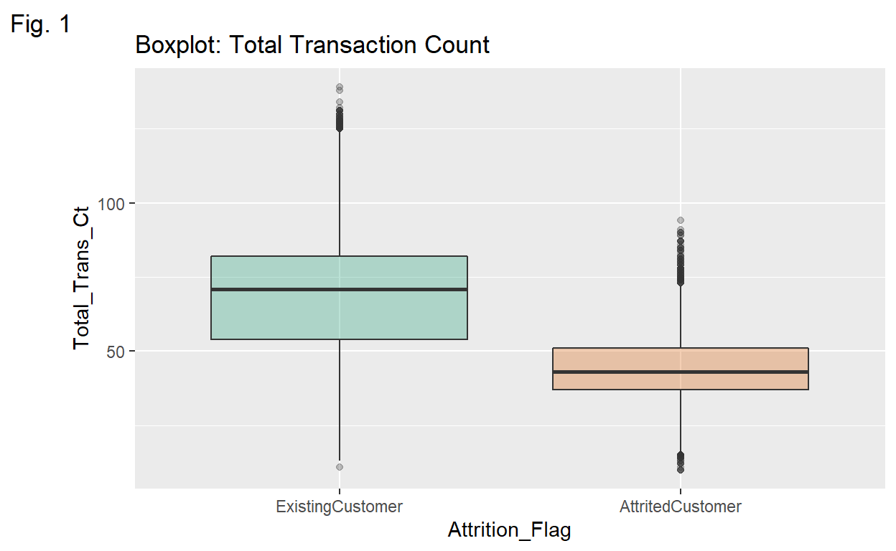
Transaction Amt💵 Both existing and attrited Customers are right-skewed due to outliers regarding their total transaction amounts.
ggplot(data = BankChurners1,
mapping = aes(x = Attrition_Flag,
y = Total_Trans_Amt,
fill = Attrition_Flag)) +
labs(title = "Boxplot: Total Transaction Amount",
tag = "Fig. 2") +
geom_boxplot(alpha = .3) +
theme(legend.position = "none") +
scale_fill_brewer(palette = "Accent")
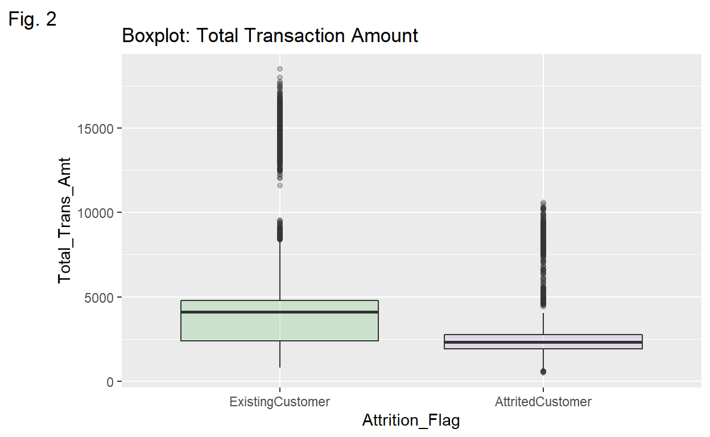
🌠Credit Limit The majority of attrited customers have lower than $5000 credit.
ggplot(data = BankChurners1,
mapping = aes(x = Credit_Limit,
fill = Attrition_Flag)) +
geom_histogram(color = "#e9ecef",
alpha = 1,
position = "stack") +
scale_fill_manual(values=c("#adb8ff", "#e8b5ff")) +
theme_ipsum() +
labs(title = "Histogram: Credit Limit vs Attrition",
tag = "Fig. 4")
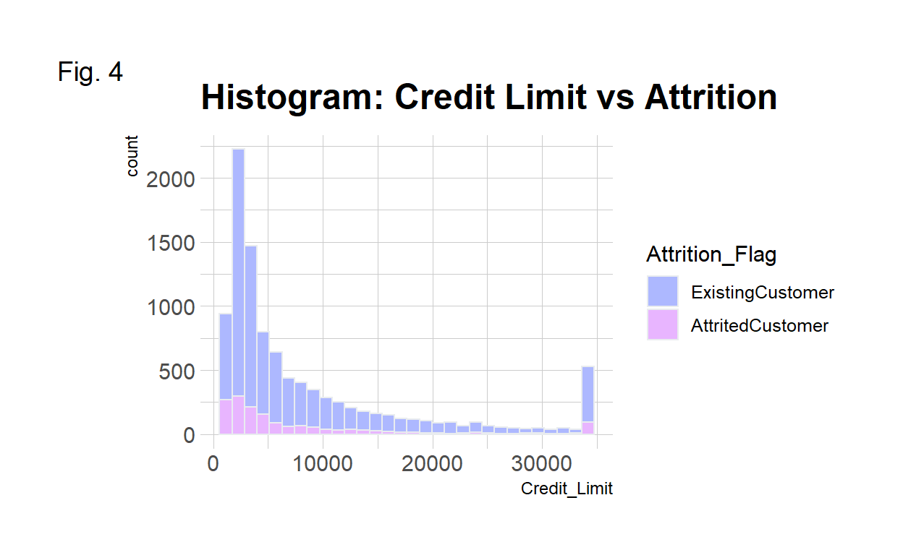
Income vs Gender Females’ income levels are concentrated at low levels such as levels 1 and 2 while males have much higher income level distributions.
ggplot(data = BankChurners1,
mapping = aes(x = Income_Level,
group = Gender,
fill = Gender)) +
geom_density(adjust = 1.5, alpha = .4) +
theme_ipsum() +
labs(title = "Density Plot: Gender vs Income Level",
tag = "Fig. 3") +
scale_color_manual(values=c("M"="blue", "F"="pink")) # not working
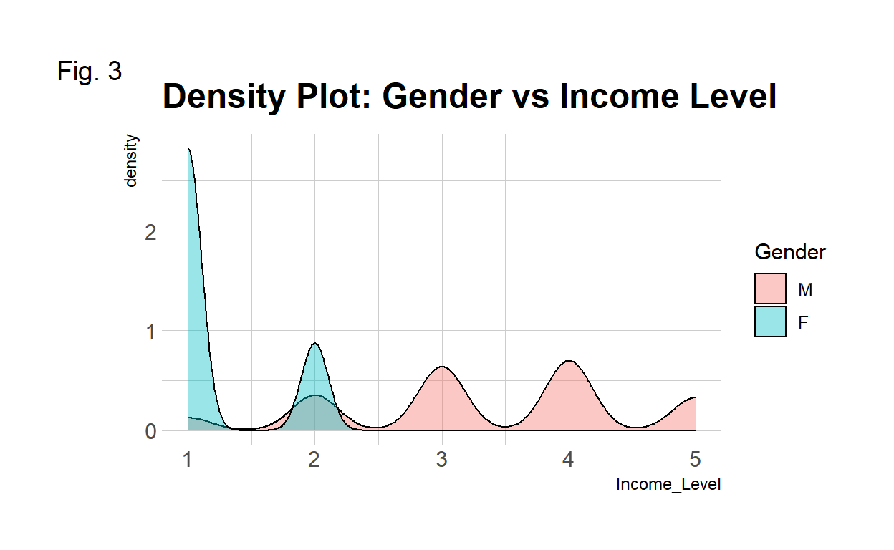
The three models used for this project are as follow:
I split the data set into the training set and testing set based on 4 different ratios, and the 7:3 ratio has the best result, so I use this ratio for rest of models: 🌳random forest, gradient boosting tree🌲, and 💫neural network🔮 to train🚋 each data set. After importing the original data set, I use the kNN function with k = 10 to replace those missing values. For comparison, I replace missing values only in the training set and leave the testing set as it is. Both random forest and gradient boosting trees have better performance in terms of recall after re-sampling in the training sets. Neural network model turns out to have the worst performance. I am going to use SOMTE for the neural network model just to see the comparison. It does improved the recall quit bit even though the accuracy decreased a bit. I will update the comparsion table and the result description late.
Original data set with Total Missing Value Replaced
I use 4 different ratio to split the data set into a training set and a testing set. The 7:3 ratio has the best performance. The model has 0.9661 of accuracy🎯 and 0.8683 in kappa, this huge drop probably is due to the imbalanced distribution of the attrition. The recall is 0.8381, which means that this model will misclassify 2 attrited customers of every 10 customers as existing customers.
comparison <- matrix(c(0.9599, 0.8437, 0.8155, 0.9590, 0.8406, 0.8154, 0.9661, 0.8683, 0.8381, 0.9580, 0.8359, 0.8062),
ncol = 3, byrow = TRUE)
colnames(comparison) <- c("Accuracy", "Kappa", "Recall")
rownames(comparison) <- c("5:5", "6:4", "7:3", "8:2")
comparison <- as.data.frame.matrix(comparison)
kable(comparison) %>%
row_spec(3, color = "white", background = "#bdaeea")
| Accuracy | Kappa | Recall | |
|---|---|---|---|
| 5:5 | 0.9599 | 0.8437 | 0.8155 |
| 6:4 | 0.9590 | 0.8406 | 0.8154 |
| 7:3 | 0.9661 | 0.8683 | 0.8381 |
| 8:2 | 0.9580 | 0.8359 | 0.8062 |
5:5 Data split in 5:5 ratio.
# data split
index <- createDataPartition(BankChurners2$Attrition_Flag,
p = .5, list = FALSE, times = 1)
train <- BankChurners2[index,]
test <- BankChurners2[-index,]
# train1
churn_RF1 <- train(
form = factor(Attrition_Flag) ~.,
data = train,
trControl = trainControl(method = "cv",
number = 10,
classProbs = TRUE),
method = "rf",
tuneLength = 10
)
# churn_RF1
# feature importance
var_imp1 <- varImp(churn_RF1)$importance %>%
arrange(desc(Overall))
kable(head(var_imp1))
| Overall | |
|---|---|
| Total_Trans_Amt | 100.00000 |
| Total_Trans_Ct | 93.11644 |
| Total_Ct_Chng_Q4_Q1 | 63.25446 |
| Total_Relationship_Count | 41.57094 |
| Total_Amt_Chng_Q4_Q1 | 36.03208 |
| Total_Revolving_Bal | 32.73355 |
ggplot(var_imp1, aes(x = reorder(rownames(var_imp1), Overall), y = Overall)) +
geom_point(color = "plum1", size = 6, alpha = 1) +
geom_segment(aes(x = rownames(var_imp1), xend = rownames(var_imp1),
y = 0, yend = Overall), color = "skyblue") +
xlab("Variable") +
ylab("Overall Importance") +
theme_light() +
coord_flip()
# test1
churn_RF_pred1 <- predict(churn_RF1, test, type = "prob")
churn_RF_test_pred1 <- cbind(churn_RF_pred1, test)
churn_RF_test_pred1 <- churn_RF_test_pred1 %>%
mutate(prediction = if_else(AttritedCustomer > ExistingCustomer,
"AttritedCustomer", "ExistingCustomer"))
table(churn_RF_test_pred1$prediction)
AttritedCustomer ExistingCustomer
730 4333 # result1
churn_matrix1 <- confusionMatrix(factor(churn_RF_test_pred1$prediction),
factor(churn_RF_test_pred1$Attrition_Flag),
positive = "AttritedCustomer")
churn_matrix1
Confusion Matrix and Statistics
Reference
Prediction ExistingCustomer AttritedCustomer
ExistingCustomer 4201 132
AttritedCustomer 49 681
Accuracy : 0.9643
95% CI : (0.9588, 0.9692)
No Information Rate : 0.8394
P-Value [Acc > NIR] : < 2.2e-16
Kappa : 0.8617
Mcnemar's Test P-Value : 1.094e-09
Sensitivity : 0.8376
Specificity : 0.9885
Pos Pred Value : 0.9329
Neg Pred Value : 0.9695
Prevalence : 0.1606
Detection Rate : 0.1345
Detection Prevalence : 0.1442
Balanced Accuracy : 0.9131
'Positive' Class : AttritedCustomer
# Accuracy : 0.9632 Kappa : 0.8586 Sensitivity : 0.8431
ggplot(as.data.frame(churn_matrix1$table)) +
geom_raster(aes(x = Reference, y = Prediction, fill = Freq)) +
geom_text(aes(x = Reference, y = Prediction, label = Freq)) +
scale_fill_gradient2(low = "darkred", high = "darkgreen",
na.value = "gray", name = "Freq") +
scale_x_discrete(name = "Actual Class") +
scale_y_discrete(name = "Predicted Class") +
ggtitle("Random Forest Confusion Matrix") +
theme(plot.title = element_text(hjust = .5, size = 10, face = "bold"))
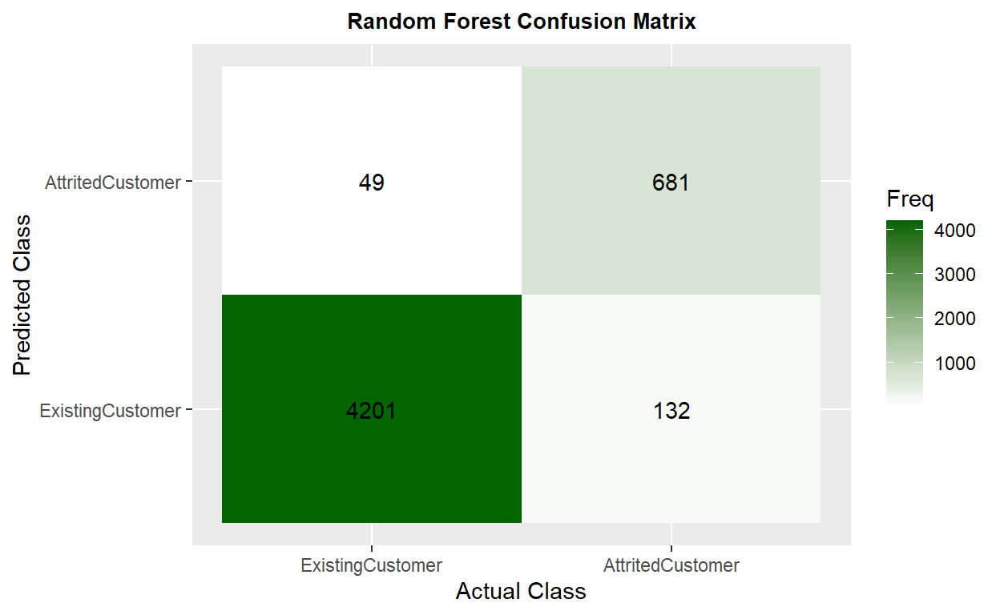
6:4 Data split in 6:4 ratio.
# data split
index <- createDataPartition(BankChurners2$Attrition_Flag,
p = .6, list = FALSE, times = 1)
train <- BankChurners2[index,]
test <- BankChurners2[-index,]
# train1
churn_RF1 <- train(
form = factor(Attrition_Flag) ~.,
data = train,
trControl = trainControl(method = "cv",
number = 10,
classProbs = TRUE),
method = "rf",
tuneLength = 10
)
# churn_RF1
# test1
churn_RF_pred1 <- predict(churn_RF1, test, type = "prob")
churn_RF_test_pred1 <- cbind(churn_RF_pred1, test)
churn_RF_test_pred1 <- churn_RF_test_pred1 %>%
mutate(prediction = if_else(AttritedCustomer > ExistingCustomer,
"AttritedCustomer", "ExistingCustomer"))
# result1
churn_matrix1 <- confusionMatrix(factor(churn_RF_test_pred1$prediction),
factor(churn_RF_test_pred1$Attrition_Flag),
positive = "AttritedCustomer")
churn_matrix1
Confusion Matrix and Statistics
Reference
Prediction ExistingCustomer AttritedCustomer
ExistingCustomer 3354 117
AttritedCustomer 46 533
Accuracy : 0.9598
95% CI : (0.9532, 0.9656)
No Information Rate : 0.8395
P-Value [Acc > NIR] : < 2.2e-16
Kappa : 0.8437
Mcnemar's Test P-Value : 4.186e-08
Sensitivity : 0.8200
Specificity : 0.9865
Pos Pred Value : 0.9206
Neg Pred Value : 0.9663
Prevalence : 0.1605
Detection Rate : 0.1316
Detection Prevalence : 0.1430
Balanced Accuracy : 0.9032
'Positive' Class : AttritedCustomer
# Accuracy : 0.9632 Kappa : 0.8586 Sensitivity : 0.8431
7:3 Data split in 7:3 ratio.
# data split
index <- createDataPartition(BankChurners2$Attrition_Flag,
p = .7, list = FALSE, times = 1)
train <- BankChurners2[index,]
test <- BankChurners2[-index,]
# train1
churn_RF1 <- train(
form = factor(Attrition_Flag) ~.,
data = train,
trControl = trainControl(method = "cv",
number = 10,
classProbs = TRUE),
method = "rf",
tuneLength = 10
)
# churn_RF1
# test1
churn_RF_pred1 <- predict(churn_RF1, test, type = "prob")
churn_RF_test_pred1 <- cbind(churn_RF_pred1, test)
churn_RF_test_pred1 <- churn_RF_test_pred1 %>%
mutate(prediction = if_else(AttritedCustomer > ExistingCustomer,
"AttritedCustomer", "ExistingCustomer"))
table(churn_RF_test_pred1$prediction)
AttritedCustomer ExistingCustomer
444 2594 # result1
churn_matrix1 <- confusionMatrix(factor(churn_RF_test_pred1$prediction),
factor(churn_RF_test_pred1$Attrition_Flag),
positive = "AttritedCustomer")
churn_matrix1
Confusion Matrix and Statistics
Reference
Prediction ExistingCustomer AttritedCustomer
ExistingCustomer 2519 75
AttritedCustomer 31 413
Accuracy : 0.9651
95% CI : (0.958, 0.9713)
No Information Rate : 0.8394
P-Value [Acc > NIR] : < 2.2e-16
Kappa : 0.8657
Mcnemar's Test P-Value : 2.96e-05
Sensitivity : 0.8463
Specificity : 0.9878
Pos Pred Value : 0.9302
Neg Pred Value : 0.9711
Prevalence : 0.1606
Detection Rate : 0.1359
Detection Prevalence : 0.1461
Balanced Accuracy : 0.9171
'Positive' Class : AttritedCustomer
8:2 Data split in 8:2 ratio.
# data split
index <- createDataPartition(BankChurners2$Attrition_Flag,
p = .8, list = FALSE, times = 1)
train <- BankChurners2[index,]
test <- BankChurners2[-index,]
# train1
churn_RF1 <- train(
form = factor(Attrition_Flag) ~.,
data = train,
trControl = trainControl(method = "cv",
number = 10,
classProbs = TRUE),
method = "rf",
tuneLength = 10
)
# test1
churn_RF_pred1 <- predict(churn_RF1, test, type = "prob")
churn_RF_test_pred1 <- cbind(churn_RF_pred1, test)
churn_RF_test_pred1 <- churn_RF_test_pred1 %>%
mutate(prediction = if_else(AttritedCustomer > ExistingCustomer,
"AttritedCustomer", "ExistingCustomer"))
# result1
churn_matrix1 <- confusionMatrix(factor(churn_RF_test_pred1$prediction),
factor(churn_RF_test_pred1$Attrition_Flag),
positive = "AttritedCustomer")
churn_matrix1
Confusion Matrix and Statistics
Reference
Prediction ExistingCustomer AttritedCustomer
ExistingCustomer 1683 41
AttritedCustomer 17 284
Accuracy : 0.9714
95% CI : (0.9631, 0.9782)
No Information Rate : 0.8395
P-Value [Acc > NIR] : < 2.2e-16
Kappa : 0.8904
Mcnemar's Test P-Value : 0.002527
Sensitivity : 0.8738
Specificity : 0.9900
Pos Pred Value : 0.9435
Neg Pred Value : 0.9762
Prevalence : 0.1605
Detection Rate : 0.1402
Detection Prevalence : 0.1486
Balanced Accuracy : 0.9319
'Positive' Class : AttritedCustomer
data set with 14 variables and Total Missing Value Replaced
Education level🎓, marital status💑, card category💳, income level💰, dependent count👶, and gender👦 👩 are the least important variables that used for the final prediction. After dropping those 6 variables, the model performance decreased a little bit compared to the previous model’s.
# data split drop 6 var
BankChurners_drop_var <- BankChurners2[-c(3:8)]
index_var <- createDataPartition(BankChurners_drop_var$Attrition_Flag,
p = .7, list = FALSE, times = 1)
train_var <- BankChurners_drop_var[index,]
test_var <- BankChurners_drop_var[-index,]
# train drop 6 var
churn_RF_var <- train(
form = factor(Attrition_Flag) ~.,
data = train_var,
trControl = trainControl(method = "cv",
number = 10,
classProbs = TRUE),
method = "rf",
tuneLength = 10
)
# churn_RF_var
# test drop 6 var
churn_RF_pred_var <- predict(churn_RF_var, test_var, type = "prob")
churn_RF_test_pred_var <- cbind(churn_RF_pred_var, test_var)
churn_RF_test_pred_var <- churn_RF_test_pred_var %>%
mutate(prediction = if_else(AttritedCustomer > ExistingCustomer,
"AttritedCustomer", "ExistingCustomer"))
table(churn_RF_test_pred_var$prediction)
AttritedCustomer ExistingCustomer
299 1726 # result drop 6 var
churn_matrix_var <- confusionMatrix(factor(churn_RF_test_pred_var$prediction),
factor(churn_RF_test_pred_var$Attrition_Flag),
positive = "AttritedCustomer")
churn_matrix_var
Confusion Matrix and Statistics
Reference
Prediction ExistingCustomer AttritedCustomer
ExistingCustomer 1682 44
AttritedCustomer 18 281
Accuracy : 0.9694
95% CI : (0.9609, 0.9764)
No Information Rate : 0.8395
P-Value [Acc > NIR] : < 2.2e-16
Kappa : 0.8826
Mcnemar's Test P-Value : 0.001498
Sensitivity : 0.8646
Specificity : 0.9894
Pos Pred Value : 0.9398
Neg Pred Value : 0.9745
Prevalence : 0.1605
Detection Rate : 0.1388
Detection Prevalence : 0.1477
Balanced Accuracy : 0.9270
'Positive' Class : AttritedCustomer
Original data set with Training Set Missing Value Replaced
Only replaced missing values in the training set. The model has 0.9575 in accuracy and 0.8341 in kappa, which improved 📈 compared to the previous model. The recall is 0.8062, which means that this model will misclassify 1 attrited customer of every 10 customers as existing customers.
# data split
index2 <- createDataPartition(BankChurners1$Attrition_Flag,
p = .7, list = FALSE, times = 1)
train2 <- BankChurners1[index,]
test2 <- BankChurners1[-index,]
table(is.na(train2))
FALSE TRUE
154354 7686 # replace missing values in the training set
train2 <- VIM::kNN(train2,
variable = c("Dependent_count", "Education_Level",
"Marital_Status", "Income_Level",
"Months_Inactive_12_mon", "Contacts_Count_12_mon",
"Total_Revolving_Bal", "Total_Amt_Chng_Q4_Q1",
"Total_Ct_Chng_Q4_Q1", "Avg_Utilization_Ratio"),
k = 10)
# summary(train2)
train2 <- train2[, -c(21:30)]
table(is.na(train2))
FALSE
162040 # train2
churn_RF2 <- train(
form = factor(Attrition_Flag) ~.,
data = train2,
trControl = trainControl(method = "cv",
number = 10,
classProbs = TRUE),
method = "rf",
tuneLength = 10
)
# churn_RF2
# test1
churn_RF_pred2 <- predict(churn_RF2, test, type = "prob")
churn_RF_test_pred2 <- cbind(churn_RF_pred2, test)
churn_RF_test_pred2 <- churn_RF_test_pred2 %>%
mutate(prediction = if_else(AttritedCustomer > ExistingCustomer,
"AttritedCustomer", "ExistingCustomer"))
table(churn_RF_test_pred2$prediction)
AttritedCustomer ExistingCustomer
301 1724 #result1
churn_matrix2 <- confusionMatrix(factor(churn_RF_test_pred2$prediction),
factor(churn_RF_test_pred2$Attrition_Flag),
positive = "AttritedCustomer")
churn_matrix2
Confusion Matrix and Statistics
Reference
Prediction ExistingCustomer AttritedCustomer
ExistingCustomer 1682 42
AttritedCustomer 18 283
Accuracy : 0.9704
95% CI : (0.962, 0.9773)
No Information Rate : 0.8395
P-Value [Acc > NIR] : < 2.2e-16
Kappa : 0.8867
Mcnemar's Test P-Value : 0.002985
Sensitivity : 0.8708
Specificity : 0.9894
Pos Pred Value : 0.9402
Neg Pred Value : 0.9756
Prevalence : 0.1605
Detection Rate : 0.1398
Detection Prevalence : 0.1486
Balanced Accuracy : 0.9301
'Positive' Class : AttritedCustomer
ggplot(as.data.frame(churn_matrix2$table)) +
geom_raster(aes(x = Reference, y = Prediction, fill = Freq)) +
geom_text(aes(x = Reference, y = Prediction, label = Freq)) +
scale_fill_gradient2(low = "darkred", high = "plum1",
na.value = "gray", name = "Freq") +
scale_x_discrete(name = "Actual Class") +
scale_y_discrete(name = "Predicted Class") +
ggtitle("Random Forest Confusion Matrix") +
theme(plot.title = element_text(hjust = .5, size = 10, face = "bold"))
Original data set with Total Missing Value Replaced and Resampling in the Training Set
The model has 0.9549 of accuracy and 0.8423 in kappa, which is similar to the previous model. The recall is 0.9344, the highest score among other models.
# data split
index <- createDataPartition(BankChurners2$Attrition_Flag,
p = .7, list = FALSE, times = 1)
train <- BankChurners2[index,]
test <- BankChurners2[-index,]
# train3
churn_RF3 <- train(
form = factor(Attrition_Flag) ~.,
data = train,
trControl = trainControl(method = "cv",
number = 10,
classProbs = TRUE,
sampling = "smote"),
method = "rf",
tuneLength = 10
)
# churn_RF3
# feature importance
var_imp3 <- varImp(churn_RF3)$importance %>%
arrange(desc(Overall))
kable(head(var_imp3))
| Overall | |
|---|---|
| Total_Trans_Ct | 100.00000 |
| Total_Trans_Amt | 71.55841 |
| Total_Ct_Chng_Q4_Q1 | 35.62309 |
| Total_Relationship_Count | 26.05581 |
| Months_Inactive_12_mon | 19.63056 |
| Total_Amt_Chng_Q4_Q1 | 14.54063 |
ggplot(var_imp3, aes(x = reorder(rownames(var_imp3), Overall), y = Overall)) +
geom_point(color = "plum1", size = 6, alpha = 1) +
geom_segment(aes(x = rownames(var_imp3), xend = rownames(var_imp3),
y = 0, yend = Overall), color = "skyblue") +
xlab("Variable") +
ylab("Overall Importance") +
theme_light() +
coord_flip()
# test3
churn_RF_pred3 <- predict(churn_RF3, test, type = "prob")
churn_RF_test_pred3 <- cbind(churn_RF_pred3, test)
churn_RF_test_pred3 <- churn_RF_test_pred3 %>%
mutate(prediction = if_else(AttritedCustomer > ExistingCustomer,
"AttritedCustomer", "ExistingCustomer"))
table(churn_RF_test_pred3$prediction)
AttritedCustomer ExistingCustomer
552 2486 # result3
churn_matrix3 <- confusionMatrix(factor(churn_RF_test_pred3$prediction),
factor(churn_RF_test_pred3$Attrition_Flag),
positive = "AttritedCustomer")
churn_matrix3
Confusion Matrix and Statistics
Reference
Prediction ExistingCustomer AttritedCustomer
ExistingCustomer 2448 38
AttritedCustomer 102 450
Accuracy : 0.9539
95% CI : (0.9458, 0.9611)
No Information Rate : 0.8394
P-Value [Acc > NIR] : < 2.2e-16
Kappa : 0.8377
Mcnemar's Test P-Value : 1.012e-07
Sensitivity : 0.9221
Specificity : 0.9600
Pos Pred Value : 0.8152
Neg Pred Value : 0.9847
Prevalence : 0.1606
Detection Rate : 0.1481
Detection Prevalence : 0.1817
Balanced Accuracy : 0.9411
'Positive' Class : AttritedCustomer
ggplot(as.data.frame(churn_matrix3$table)) +
geom_raster(aes(x = Reference, y = Prediction, fill = Freq)) +
geom_text(aes(x = Reference, y = Prediction, label = Freq)) +
scale_fill_gradient2(low = "darkred", high = "powderblue",
na.value = "gray", name = "Freq") +
scale_x_discrete(name = "Actual Class") +
scale_y_discrete(name = "Predicted Class") +
ggtitle("Random Forest & SMOTE Confusino Matrix") +
theme(plot.title = element_text(hjust = .5, size = 10, face = "bold"))
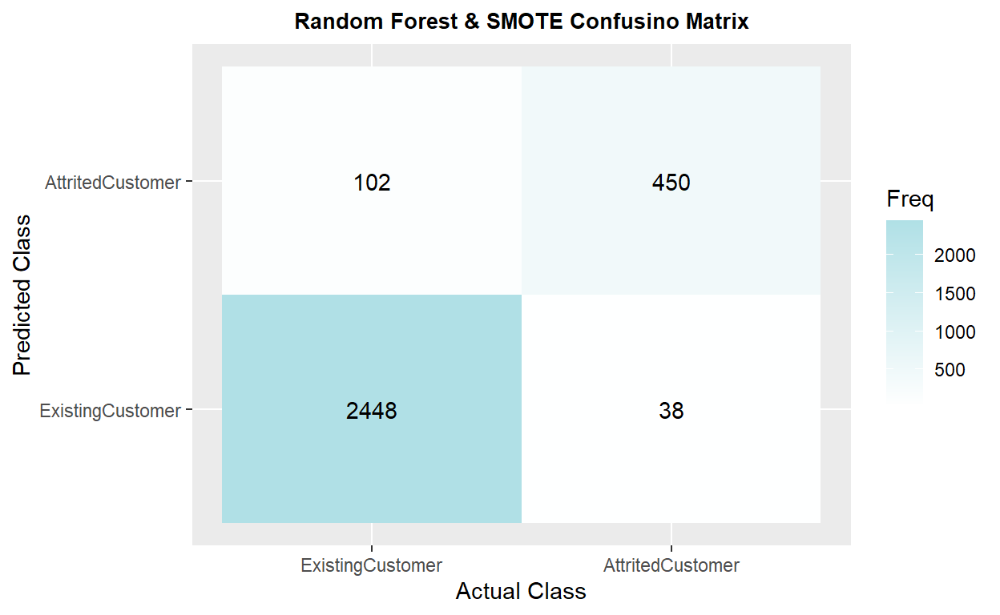
Original data set with Total Missing Value Replaced
The model has 0.9681 of accuracy and 0.8781 in kappa. The recall is 0.8648 Gradient boosting tree has a better performance compared to the random forest under the same condition.
# data split
index <- createDataPartition(BankChurners2$Attrition_Flag,
p = .7, list = FALSE, times = 1)
train <- BankChurners2[index,]
test <- BankChurners2[-index,]
# train4
churn_GBM1 <- train(
form = factor(Attrition_Flag) ~.,
data = train,
trControl = trainControl(method = "cv",
number = 10,
classProbs = TRUE),
method = "gbm",
tuneLength = 10,
verbose = FALSE
)
kable(churn_GBM1$bestTune)
| n.trees | interaction.depth | shrinkage | n.minobsinnode | |
|---|---|---|---|---|
| 60 | 500 | 6 | 0.1 | 10 |
plot(churn_GBM1)
# test4
churn_GBM_pred1 <- predict(churn_GBM1, test, type = "prob")
churn_GBM_test_pred1 <- cbind(churn_GBM_pred1, test)
churn_GBM_test_pred1 <- churn_GBM_test_pred1 %>%
mutate(prediction = if_else(AttritedCustomer > ExistingCustomer,
"AttritedCustomer", "ExistingCustomer"))
table(churn_GBM_test_pred1$prediction)
AttritedCustomer ExistingCustomer
446 2592 # result4
churn_matrix4 <- confusionMatrix(factor(churn_GBM_test_pred1$prediction),
factor(churn_GBM_test_pred1$Attrition_Flag),
positive = "AttritedCustomer")
churn_matrix4
Confusion Matrix and Statistics
Reference
Prediction ExistingCustomer AttritedCustomer
ExistingCustomer 2529 63
AttritedCustomer 21 425
Accuracy : 0.9724
95% CI : (0.9659, 0.9779)
No Information Rate : 0.8394
P-Value [Acc > NIR] : < 2.2e-16
Kappa : 0.8938
Mcnemar's Test P-Value : 7.696e-06
Sensitivity : 0.8709
Specificity : 0.9918
Pos Pred Value : 0.9529
Neg Pred Value : 0.9757
Prevalence : 0.1606
Detection Rate : 0.1399
Detection Prevalence : 0.1468
Balanced Accuracy : 0.9313
'Positive' Class : AttritedCustomer
ggplot(as.data.frame(churn_matrix4$table)) +
geom_raster(aes(x = Reference, y = Prediction, fill = Freq)) +
geom_text(aes(x = Reference, y = Prediction, label = Freq)) +
scale_fill_gradient2(low = "darkred", high = "pink",
na.value = "grey", name = "Freq") +
scale_x_discrete(name = "Actual Class") +
scale_y_discrete(name = "Predicted Class") +
ggtitle("Gradient Boosting Tree Confusion Matrix") +
theme(plot.title = element_text(hjust = .5, size = 10, face = "bold"))
| Overall | |
|---|---|
| Total_Trans_Ct | 100.00000 |
| Total_Trans_Amt | 86.21584 |
| Total_Ct_Chng_Q4_Q1 | 42.17720 |
| Total_Relationship_Count | 34.47348 |
| Total_Amt_Chng_Q4_Q1 | 24.89156 |
| Total_Revolving_Bal | 17.50240 |
ggplot(var_imp4, aes(x = reorder(rownames(var_imp4), Overall), y = Overall)) +
geom_point(color = "violet", size = 6, alpha = 1) +
geom_segment(aes(x = rownames(var_imp4), xend = rownames(var_imp4),
y = 0, yend = Overall), color = "skyblue") +
xlab("Variable") +
ylab("Overall Importance") +
theme_light() +
coord_flip()
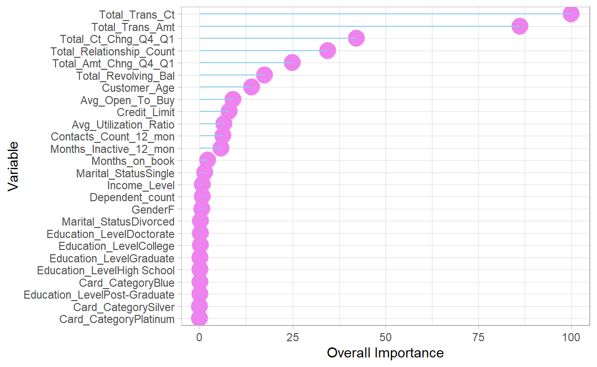
Original data set with Training Set Missing Value Replaced and only replaced missing values in the training set
The model has 0.9691 of accuracy and 0.8805 in kappa, and recall is 0.8545
# data split
index2 <- createDataPartition(BankChurners1$Attrition_Flag,
p = .7, list = FALSE, times = 1)
train2 <- BankChurners1[index,]
test2 <- BankChurners1[-index,]
table(is.na(train2))
FALSE TRUE
134991 6789 # replace missing values in the training set
train2 <- VIM::kNN(train2,
variable = c("Dependent_count", "Education_Level",
"Marital_Status", "Income_Level",
"Months_Inactive_12_mon", "Contacts_Count_12_mon",
"Total_Revolving_Bal", "Total_Amt_Chng_Q4_Q1",
"Total_Ct_Chng_Q4_Q1", "Avg_Utilization_Ratio"),
k = 10)
# summary(train2)
train2 <- train2[,-c(21:30)]
table(is.na(train2))
FALSE
141780 # train5
churn_GBM2 <- train(
form = factor(Attrition_Flag) ~.,
data = train2,
trControl = trainControl(method = "cv",
number = 10,
classProbs = TRUE),
method = "gbm",
tuneLength = 10,
verbose = FALSE
)
# churn_GBM2
kable(churn_GBM2$bestTune)
| n.trees | interaction.depth | shrinkage | n.minobsinnode | |
|---|---|---|---|---|
| 85 | 250 | 9 | 0.1 | 10 |
plot(churn_GBM2)
# test5
churn_GBM_pred2 <- predict(churn_GBM2, test, type = "prob")
churn_GBM_test_pred2 <- cbind(churn_GBM_pred2, test2)
churn_GBM_test_pred2 <- churn_GBM_test_pred2 %>%
mutate(prediction = if_else(AttritedCustomer > ExistingCustomer,
"AttritedCustomer", "ExistingCustomer"))
table(churn_GBM_test_pred2$prediction)
AttritedCustomer ExistingCustomer
450 2588 # result5
churn_matrix5 <- confusionMatrix(factor(churn_GBM_test_pred2$prediction),
factor(churn_GBM_test_pred2$Attrition_Flag),
positive = "AttritedCustomer")
churn_matrix5
Confusion Matrix and Statistics
Reference
Prediction ExistingCustomer AttritedCustomer
ExistingCustomer 2526 62
AttritedCustomer 24 426
Accuracy : 0.9717
95% CI : (0.9652, 0.9773)
No Information Rate : 0.8394
P-Value [Acc > NIR] : < 2.2e-16
Kappa : 0.8916
Mcnemar's Test P-Value : 6.613e-05
Sensitivity : 0.8730
Specificity : 0.9906
Pos Pred Value : 0.9467
Neg Pred Value : 0.9760
Prevalence : 0.1606
Detection Rate : 0.1402
Detection Prevalence : 0.1481
Balanced Accuracy : 0.9318
'Positive' Class : AttritedCustomer
ggplot(as.data.frame(churn_matrix5$table)) +
geom_raster(aes(x = Reference, y = Prediction, fill = Freq)) +
geom_text(aes(x = Reference, y = Prediction, label = Freq)) +
scale_fill_gradient2(low = "darkred", high = "lavender",
na.value = "grey", name = "Freq") +
scale_x_discrete(name = "Actual Class") +
scale_y_discrete(name = "Predicted Class") +
ggtitle("Gradient Boosting Tree Confusion Matrix") +
theme(plot.title = element_text(hjust = .5, size = 10, face = "bold"))
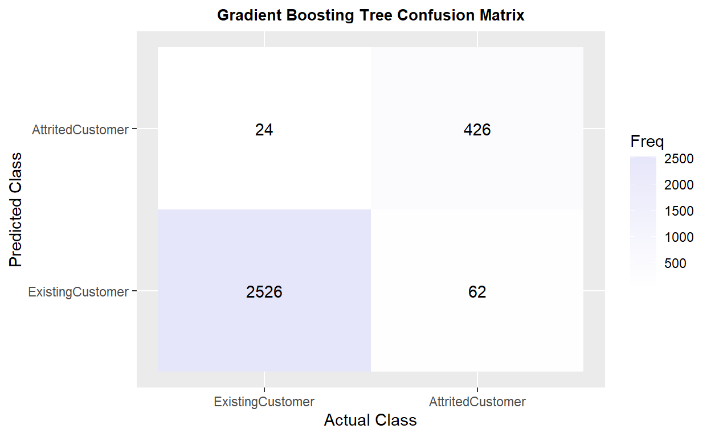
Original data set with Total Missing Value Replaced and Resampling in the Training Set
The model has 0.9635 of accuracy and 0.8668 in kappa, which is similar to the previous result. The recall is 0.9078 🎉 (Mcnemar’s Test P-Value : 0.02545 🅿)
# data split
index <- createDataPartition(BankChurners2$Attrition_Flag,
p = .7, list = FALSE, times = 1)
train <- BankChurners2[index,]
test <- BankChurners2[-index,]
# train6
churn_GBM3 <- train(
form = factor(Attrition_Flag) ~.,
data = train,
trControl = trainControl(method = "cv",
number = 10,
classProbs = TRUE,
sampling = "smote"),
method = "gbm",
tuneLength = 10,
verbose = FALSE
)
# kable(churn_GBM3$bestTune)
# plot(churn_GBM3)
# test6
churn_GBM_pred3 <- predict(churn_GBM3, test, type = "prob")
churn_GBM_test_pred3 <- cbind(churn_GBM_pred3, test)
churn_GBM_test_pred3 <- churn_GBM_test_pred3 %>%
mutate(prediction = if_else(AttritedCustomer > ExistingCustomer,
"AttritedCustomer", "ExistingCustomer"))
table(churn_GBM_test_pred3$prediction)
AttritedCustomer ExistingCustomer
529 2509 # result6
churn_matrix6 <- confusionMatrix(factor(churn_GBM_test_pred3$prediction),
factor(churn_GBM_test_pred3$Attrition_Flag),
positive = "AttritedCustomer")
churn_matrix6
Confusion Matrix and Statistics
Reference
Prediction ExistingCustomer AttritedCustomer
ExistingCustomer 2472 37
AttritedCustomer 78 451
Accuracy : 0.9621
95% CI : (0.9547, 0.9686)
No Information Rate : 0.8394
P-Value [Acc > NIR] : < 2.2e-16
Kappa : 0.8642
Mcnemar's Test P-Value : 0.0001915
Sensitivity : 0.9242
Specificity : 0.9694
Pos Pred Value : 0.8526
Neg Pred Value : 0.9853
Prevalence : 0.1606
Detection Rate : 0.1485
Detection Prevalence : 0.1741
Balanced Accuracy : 0.9468
'Positive' Class : AttritedCustomer
ggplot(as.data.frame(churn_matrix6$table)) +
geom_raster(aes(x = Reference, y = Prediction, fill = Freq)) +
geom_text(aes(x = Reference, y = Prediction, label = Freq)) +
scale_fill_gradient2(low = "darkred", high = "firebrick",
na.value = "grey", name = "Freq") +
scale_x_discrete(name = "Actual Class") +
scale_y_discrete(name = "Predicted Class") +
ggtitle("Gradient Boosting Tree & SMOTE Confusion Matrix") +
theme(plot.title = element_text(hjust = .5, size = 10, face = "bold"))
| Overall | |
|---|---|
| Total_Trans_Ct | 100.000000 |
| Total_Trans_Amt | 30.220501 |
| Total_Ct_Chng_Q4_Q1 | 22.463371 |
| Total_Relationship_Count | 16.367709 |
| Months_Inactive_12_mon | 15.729941 |
| Total_Amt_Chng_Q4_Q1 | 6.665217 |
ggplot(var_imp4, aes(x = reorder(rownames(var_imp5), Overall), y = Overall)) +
geom_point(color = "powderblue", size = 6, alpha = 1) +
geom_segment(aes(x = rownames(var_imp5), xend = rownames(var_imp5),
y = 0, yend = Overall), color = "plum1") +
xlab("Variable") +
ylab("Overall Importance") +
theme_light() +
coord_flip()
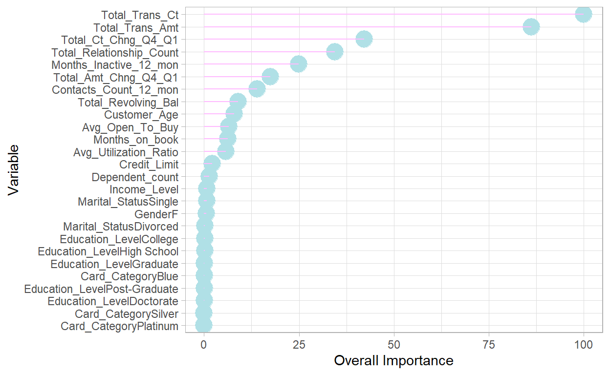
Original data set with Total Missing Value Replaced
The model has 0.9351 of accuracy and 0.7446 in kappa, and recall is 0.7277😕. The ROC curve looks great🏄 ROC result description: _____.
# train7
churn_NNET <- train(
form = factor(Attrition_Flag) ~.,
data = train,
trControl = trainControl(method = "cv",
number = 10,
classProb =TRUE),
method = "nnet",
preProcess = c("center", "scale"),
tuneLength = 5,
trace= FALSE
)
plot(churn_NNET)
# test7
churn_NNET_pred <- predict(churn_NNET, test, type = "prob")
churn_NNET_test_pred <- cbind(churn_NNET_pred, test)
churn_NNET_test_pred <- churn_NNET_test_pred %>%
mutate(prediction = if_else(AttritedCustomer > ExistingCustomer,
"AttritedCustomer", "ExistingCustomer"))
table(churn_NNET_test_pred$prediction)
AttritedCustomer ExistingCustomer
430 2608 # result7
churn_matrix7 <- confusionMatrix(factor(churn_NNET_test_pred$prediction),
factor(churn_NNET_test_pred$Attrition_Flag),
positive = "AttritedCustomer")
churn_matrix7
Confusion Matrix and Statistics
Reference
Prediction ExistingCustomer AttritedCustomer
ExistingCustomer 2470 138
AttritedCustomer 80 350
Accuracy : 0.9282
95% CI : (0.9185, 0.9372)
No Information Rate : 0.8394
P-Value [Acc > NIR] : < 2.2e-16
Kappa : 0.7205
Mcnemar's Test P-Value : 0.0001131
Sensitivity : 0.7172
Specificity : 0.9686
Pos Pred Value : 0.8140
Neg Pred Value : 0.9471
Prevalence : 0.1606
Detection Rate : 0.1152
Detection Prevalence : 0.1415
Balanced Accuracy : 0.8429
'Positive' Class : AttritedCustomer
ggplot(as.data.frame(churn_matrix7$table)) +
geom_raster(aes(x = Reference, y = Prediction, fill = Freq)) +
geom_text(aes(x = Reference, y = Prediction, label = Freq)) +
scale_fill_gradient2(low = "darkred", high = "plum1",
na.value = "grey", name = "Freq") +
scale_x_discrete(name = "Actual Class") +
scale_y_discrete(name = "Predicted Class") +
ggtitle("Neural Network Confusion Matrix") +
theme(plot.title = element_text(hjust = .5, size = 10, face = "bold"))
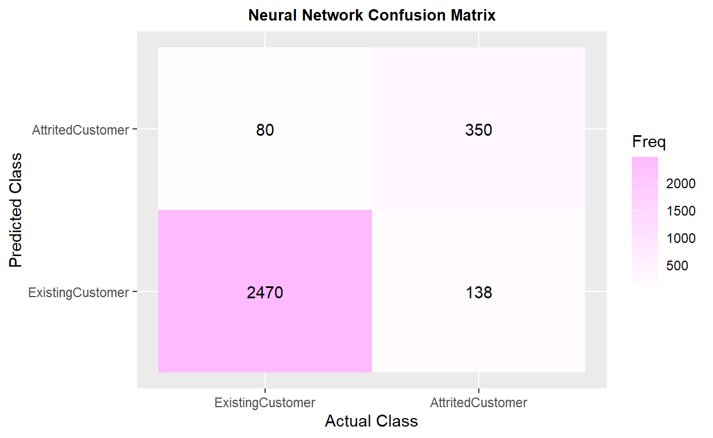
Original data set with total missing value replaced & SMOTE resampling
The model has _____ of accuracy and _____ in kappa, which is ______ to the previous model. The recall is _____, _____ compared to the prior model.
ROC result description: _____.
# train8
churn_NNET2 <- train(
form = factor(Attrition_Flag) ~.,
data = train,
trControl = trainControl(method = "cv",
number = 10,
classProb = TRUE,
sampling = "smote"),
method = "nnet",
preProcess = c("center", "scale"),
tuneLength = 5,
trace= FALSE
)
plot(churn_NNET2)
# test8
churn_NNET_pred2 <- predict(churn_NNET2, test, type = "prob")
churn_NNET_test_pred2 <- cbind(churn_NNET_pred2, test)
churn_NNET_test_pred2 <- churn_NNET_test_pred2 %>%
mutate(prediction = if_else(AttritedCustomer > ExistingCustomer,
"AttritedCustomer", "ExistingCustomer"))
table(churn_NNET_test_pred2$prediction)
AttritedCustomer ExistingCustomer
643 2395 Error in h(simpleError(msg, call)): error in evaluating the argument 'x' in selecting a method for function 'plot': object 'roc_NNET2' not found# result8
churn_matrix8 <- confusionMatrix(factor(churn_NNET_test_pred2$prediction),
factor(churn_NNET_test_pred2$Attrition_Flag),
positive = "AttritedCustomer")
churn_matrix8
Confusion Matrix and Statistics
Reference
Prediction ExistingCustomer AttritedCustomer
ExistingCustomer 2325 70
AttritedCustomer 225 418
Accuracy : 0.9029
95% CI : (0.8918, 0.9132)
No Information Rate : 0.8394
P-Value [Acc > NIR] : < 2.2e-16
Kappa : 0.6809
Mcnemar's Test P-Value : < 2.2e-16
Sensitivity : 0.8566
Specificity : 0.9118
Pos Pred Value : 0.6501
Neg Pred Value : 0.9708
Prevalence : 0.1606
Detection Rate : 0.1376
Detection Prevalence : 0.2117
Balanced Accuracy : 0.8842
'Positive' Class : AttritedCustomer
ggplot(as.data.frame(churn_matrix8$table)) +
geom_raster(aes(x = Reference, y = Prediction, fill = Freq)) +
geom_text(aes(x = Reference, y = Prediction, label = Freq)) +
scale_fill_gradient2(low = "darkred", high = "maroon",
na.value = "grey", name = "Freq") +
scale_x_discrete(name = "Actual Class") +
scale_y_discrete(name = "Predicted Class") +
ggtitle("Neural Network Confusion Matrix") +
theme(plot.title = element_text(hjust = .5, size = 10, face = "bold"))
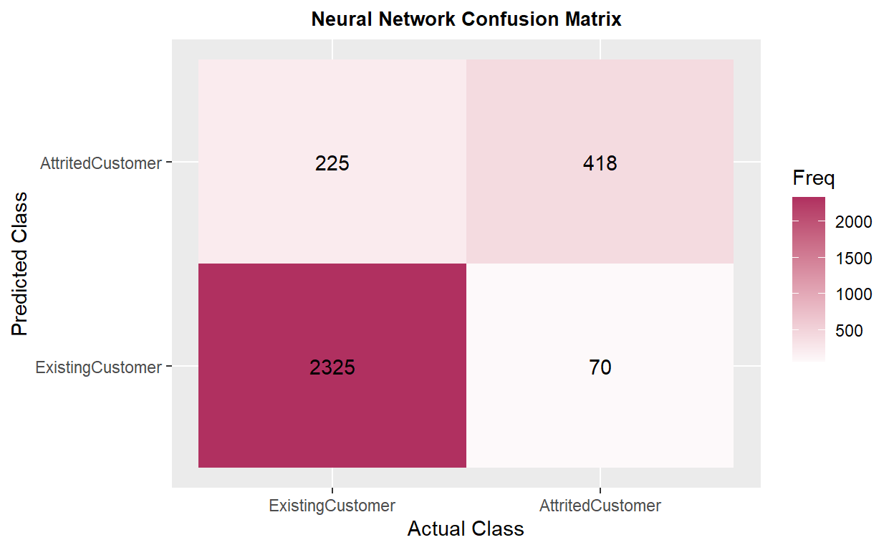
Overall, 🌳random forest model has the best performance🏆 compared to gradient boosting tree and neural network🌲, especially after replacing total missing values and using SMOTE to fix 🔧 the imbalanced data set issue. (iv.RF TOTAL NA & SMOTE)
comparison <- matrix(c(0.9661, 0.8683, 0.8381, 0.9585, 0.8409, 0.8308, 0.9575, 0.8341,
0.8062, 0.9549, 0.8423, 0.9344, 0.9681, 0.8781, 0.8648, 0.9691,
0.8805, 0.8545, 0.9635, 0.8668, 0.9078, 0.9351, 0.7446, 0.7277,
0.0000, 0.0000, 0.0000),
ncol = 3, byrow = TRUE)
colnames(comparison) <- c("Accuracy", "Kappa", "Recall")
rownames(comparison) <- c("i.RF TOTAL NA", "ii.RF TOTAL NA & VAR", "iii.RF TRAIN NA",
"iv.RF TOTAL NA & SMOTE", "v.GBT TOTAL NA", "vi.GBT TRAIN NA",
"vii.GBT TOTAL NA & SMOTE", "viii.NNET TOTAL NA", "ix.NNET TOTAL NA & SMOTE")
comparison <- as.data.frame.matrix(comparison)
kable(comparison) %>%
row_spec(4, color = "white", background = "#bdaeea")
| Accuracy | Kappa | Recall | |
|---|---|---|---|
| i.RF TOTAL NA | 0.9661 | 0.8683 | 0.8381 |
| ii.RF TOTAL NA & VAR | 0.9585 | 0.8409 | 0.8308 |
| iii.RF TRAIN NA | 0.9575 | 0.8341 | 0.8062 |
| iv.RF TOTAL NA & SMOTE | 0.9549 | 0.8423 | 0.9344 |
| v.GBT TOTAL NA | 0.9681 | 0.8781 | 0.8648 |
| vi.GBT TRAIN NA | 0.9691 | 0.8805 | 0.8545 |
| vii.GBT TOTAL NA & SMOTE | 0.9635 | 0.8668 | 0.9078 |
| viii.NNET TOTAL NA | 0.9351 | 0.7446 | 0.7277 |
| ix.NNET TOTAL NA & SMOTE | 0.0000 | 0.0000 | 0.0000 |
The original model from Kaggle has 0.62 for recall, so 🤠my models did improve the performance of predicting churned customers🥳. They can help companies to identify potential customer churn with higher success rate. The neural network model _____. Based on the variable importance rates, customers’ transaction numbers and amounts, changes in transaction amount, and total product held by customers are the most important⭐ predicting variables in those models. The demographic factors are not important in those models though.
Limitations: